울산시가 예전에 없앴다가 다시 살리려는 버스 3개 노선(123·126·307번)이 정말 필요한지, 살리면 무엇이 좋아지는지를 실제 교통카드 이용 기록으로 따져본 자료입니다. 전문 용어가 나오면 아래 용어 풀이를 참고하세요. 각 장 끝에는 "쉽게 말하면" 요약을 달았습니다.
울산시는 노선 개편 민원에 대응해 폐지된 123·126·307 3개 노선 복원을 검토 중이며, 증차(약 15대)와 추경·시의회 협조가 변수로 거론된다. 본 보고서는 이 검토안을 보유 데이터로 점검했다.
울산 통행은 구(區) 내부 이동이 절대적이다. 남구가 하루 약 9.3만(표본) 통행으로 최대 생활권 허브이며, 중구·동구·북구·울주가 각자 권역 내부 통행을 형성한다. 구 간 이동은 울주→남구(약 1.1만)·중구↔남구(약 1만) 축이 두드러진다 — 외곽(울주 범서)·중구에서 남구(삼산·신정) 도심으로 향하는 방향성이다.
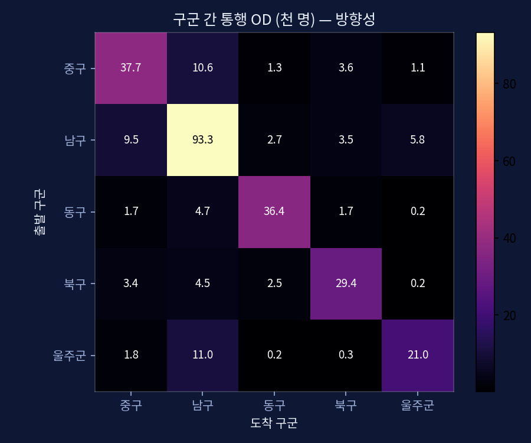
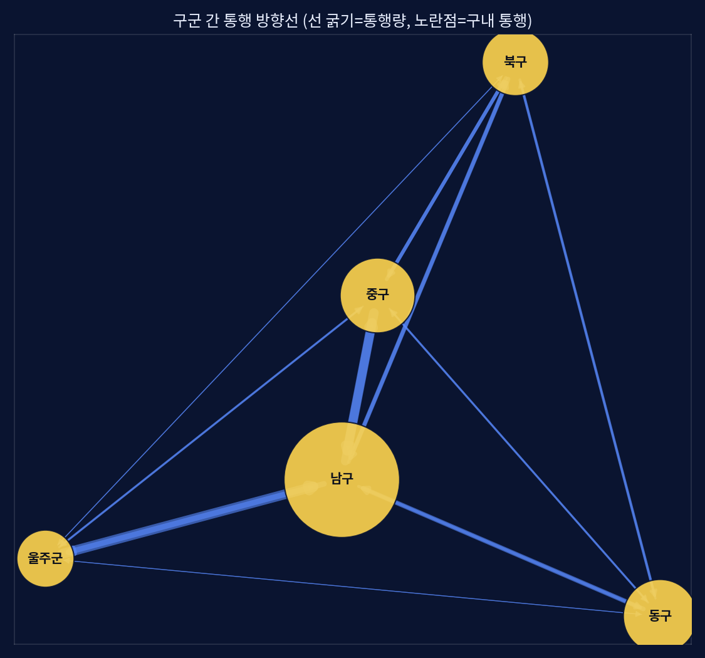
이 구조에서 폐지 3노선은 모두 외곽 생활권과 도심(삼산·태화강역)·고용지(동구 현대)를 직결하던 축으로, 환승 체계로 대체되며 불편이 집중된 지점과 정확히 겹친다.
제기된 가설: 시민이 마을버스(구내 이동)로 간선 정류장까지 간 뒤 환승해 지역이동하므로, 구내 통행이 과대 집계됐을 수 있다. 보유 데이터로 점검한 결과는 가설과 반대 방향이다.
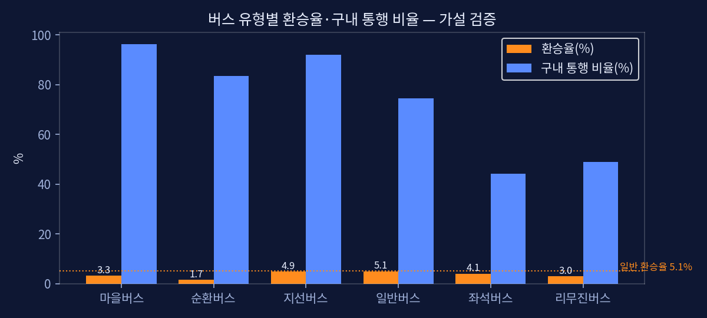
따라서 높은 구내 통행 비중은 마을버스에 의한 착시가 아니라, 구내 통행이 74.6%인 일반 시내버스가 만든 실제 도시 구조다. 지역간(구간) 이동의 실제 주력은 좌석버스(구내 비중 44%, 즉 절반 이상이 구간 통행)와 리무진이다. 단, 카드는 1회 승차(leg) 단위라 "마을→간선 환승 체인"을 직접 추적하지는 못하며, trnf_cnt 기반 간접 검증이다.
마을버스가 환승 피더가 아니라면, 실제 환승은 어느 노선·어느 지점에서 일어나는지 노선·정류장별로 집계했다.
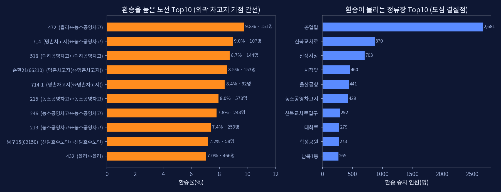
이 결과는 재도입 검토와 직접 맞물린다.
정리하면, "환승이 몰리는 노선·거점"과 "재도입 3노선이 직결로 잇는 축"이 상당 부분 겹친다 — 재도입이 환승을 해소한다는 Q3 결론을 노선·거점 차원에서 다시 확인한다.
환승이 많은 곳은 마을버스가 아니라, 외곽(농소·울주)에서 도심으로 갈 때 공업탑·신복로터리에서 갈아타는 지점입니다. 재도입 307번은 신복로터리를, 123·126번은 동구를 한 번에 이어줘서, 바로 그 갈아타기를 줄여 줍니다.
거점별로 환승 직전 도착 노선과 환승 후 목적지를 집계했다. (카드에 개인 식별자가 없어 한 사람의 '탄 노선→갈아탄 노선'을 1:1로 잇지는 못하며, 거점 단위의 도착/출발 분포로 본다.)
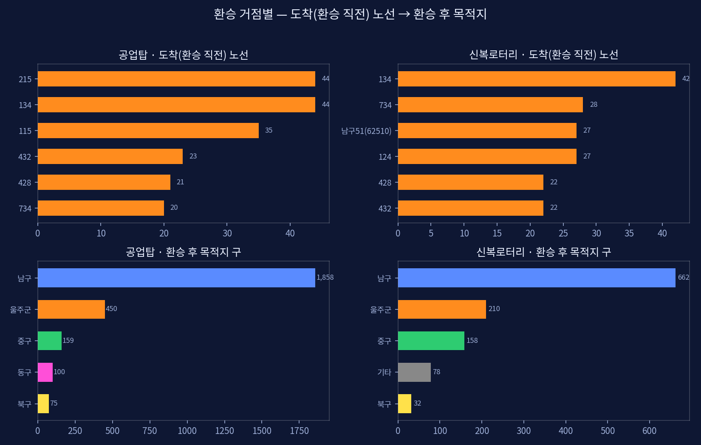
재도입 연관: 신복로터리 환승의 다수가 남구·울주행인데, 307번(천상↔삼산, 신복로터리 경유)이 이를 직결로 흡수한다. 공업탑·신복에서 도착 노선으로 잡히는 124·134 등 동구계 노선은 123·126 직결 재도입으로 환승을 줄일 수 있다. 전체 거점·노선 표는 함께 제공하는 환승거점_분석 CSV에서 확인할 수 있다.
마을버스를 제외한 간선 기준으로 지역간 이동은 출퇴근에 따라 방향이 반전된다. 오전에는 외곽·타 구에서 남구(도심)로 유입(8시에 가장 몰림), 오후에는 남구에서 외곽으로 유출(17시에 가장 몰림)된다.
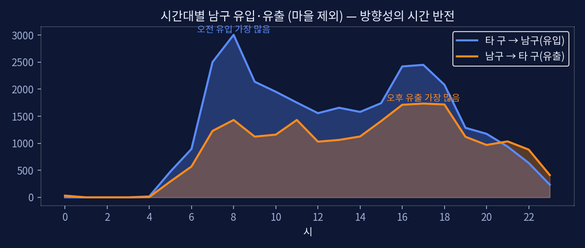
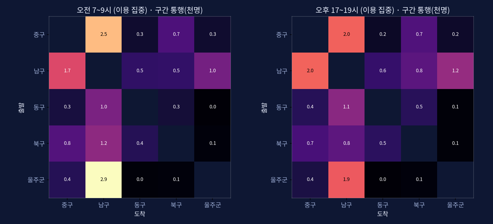
가로=도착 구, 세로=출발 구이고, 칸의 밝기·숫자가 그 방향 통행량(천 명)입니다(같은 구끼리=대각선은 제외). 오전·오후 그림이 비슷해 보이는 건 자연스러운 현상입니다 — 통근은 아침·저녁 모두 양방향으로 일어나고, 큰 칸마다 '남구'가 껴 있어 두 시점 모두 남구가 들어간 줄이 밝게 켜지기 때문입니다. 그래서 절대 밝기만으로는 방향 반전이 잘 안 보입니다.
반전을 보려면 ① 같은 칸을 오전↔오후로 직접 비교하거나(예: 울주→남구 오전 2,915 vs 오후 1,899), ② 아래 '오전−오후 차이' 그림을 보면 됩니다.
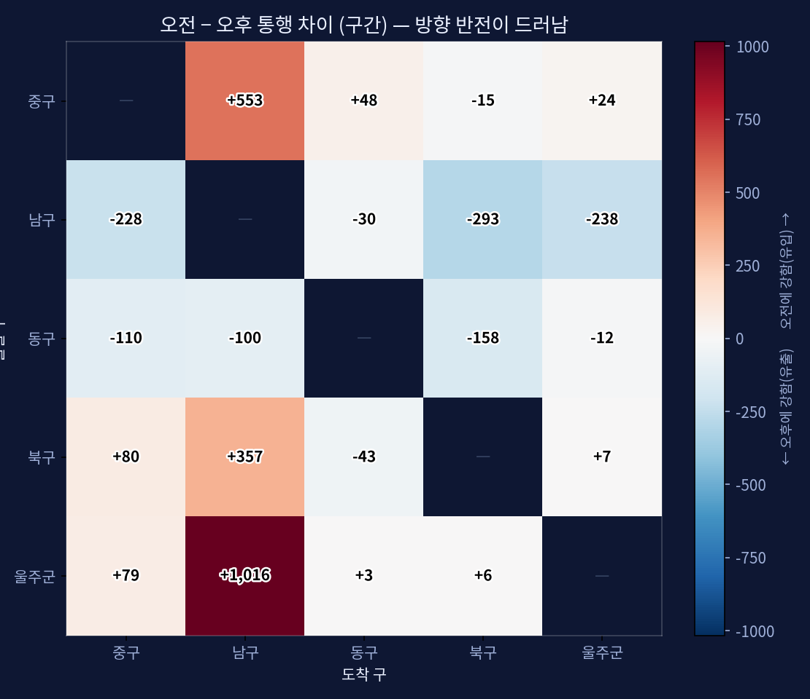
차이로 보면 반전이 또렷하다. '남구로 들어오는' 열은 전부 빨강(아침 유입) — 울주→남구 +1,016, 중구→남구 +553, 북구→남구 +357. 반대로 '남구에서 나가는' 행은 전부 파랑(저녁 유출) — 남구→북구 −293, 남구→울주 −238, 남구→중구 −228. 즉 "아침엔 외곽→남구, 저녁엔 남구→외곽"이 한눈에 드러난다. 가장 강한 아침 유입축은 울주(범서)→남구이며, 재도입 307번이 바로 이 축이다.
두 시점을 비교하면 출발–도착 구가 시간에 따라 거의 거울처럼 뒤집힌다. 오전(7~9시)에는 울주→남구(약 2,900), 중구→남구, 북구→남구처럼 외곽·주변 구에서 남구(삼산·신정 업무·상업지)로 향하는 칸이 진하게 켜지고, 오후(17~19시)에는 같은 칸들이 옅어지는 대신 남구→울주(약 1,240)·남구→중구 등 반대 방향 칸이 살아난다. 통근·통학이 만드는 전형적인 아침 도심 집중 / 저녁 외곽 분산 구조다.
한 가지 특징은 오전 유입이 오후 유출보다 더 뾰족하다는 점이다(울주→남구 오전 2,900 vs 남구→울주 오후 1,240). 출근·등교는 시작 시각이 비슷해 짧은 시간창에 몰리는 반면, 퇴근·하교는 종료 시각이 흩어져 오후 내내 완만하게 빠져나가기 때문이다. 여기에 좌석버스로 대체된 일부 구간은 오후 입석 불가로 한 번에 태우지 못해 기록상 유출이 더 여러 시간대로 분산돼 보이는 영향도 있다.
폐지 3노선은 이 외곽→도심 유입(오전)·도심→외곽 유출(오후) 축 위에 정확히 놓여 있다.
방향성이 시간에 따라 뚜렷이 갈리므로, 재도입 시 양방향 균등 배차보다 이용이 몰리는 방향에 차량을 집중하는 편이 효율적이다. 즉 오전엔 도심(남구·삼산) 방향, 오후엔 외곽 방향으로 운행을 더 배치하면 같은 대수로 그 시간대 혼잡을 더 줄일 수 있다. 특히 307은 오전 범서→삼산 유입이 핵심이므로 오전 도심방향 증차를 우선 고려할 만하다.
울산 사람들은 대부분 자기 동네(구) 안에서 버스를 탑니다. 아침엔 외곽(범서)·중구·북구에서 남구(삼산) 도심으로 우르르 몰려가고, 저녁엔 반대로 흩어집니다. 폐지된 3노선은 바로 이 "외곽↔도심", "동구 직장↔주거지"를 한 번에 잇던 길이라, 없어지니 갈아타는 불편이 커진 겁니다. ("동네 마을버스 때문에 구내 통행이 부풀려진 것 아니냐"는 의심도 확인했는데, 마을버스는 대부분 동네 안에서만 쓰여서 그게 아니었습니다.)
수요는 오전 8시·오후 16~18시 출퇴근 시간대에 집중된다. 재도입 노선의 흡수 가능 통행도 동일하게 그 시간대에 몰려, 이용이 몰리는 시간대 혼잡 완화 목적과 부합한다.
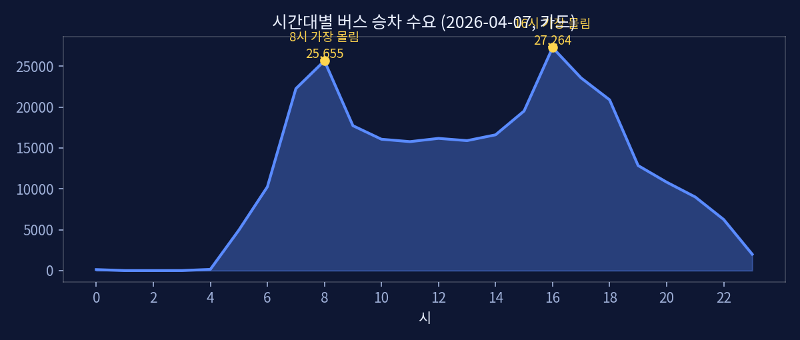
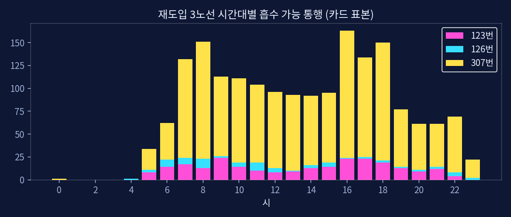
| 노선 | 하루 흡수 가능 통행(표본) | 오후 몰림 | 인가대수 | 효율(명/대) |
|---|---|---|---|---|
| 307 | 3,997 | 16시 384 | 12 | 333 |
| 123 | 602 | 17시 61 | 8 | 75 |
| 126 | 186 | 16시 19 | 8 | 23 |
※ 카드 표본·매칭 기준에 따라 절대값은 달라진다. 노선 간 상대 크기·시간대 패턴 위주로 해석할 것. (재도입 시뮬레이션 화면의 값)
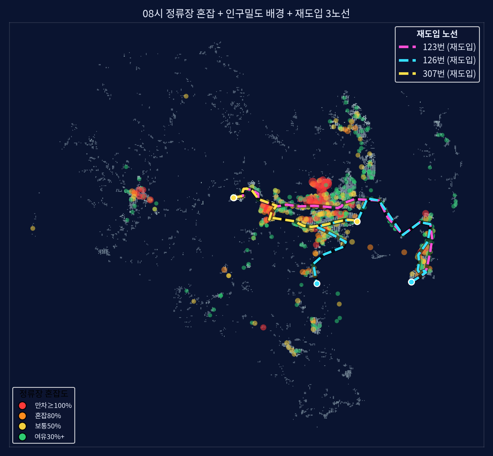
셋 중 307번이 압도적으로 손님이 많습니다. 버스 한 대가 끌어오는 손님이 307번은 333명, 123번은 75명, 126번은 23명꼴입니다. 즉 같은 예산으로 효과를 보려면 307번부터 살리는 게 유리합니다. 126번은 손님 수는 적지만, 대체된 좌석버스가 입석을 못 태워 출퇴근 무정차 불편이 큰 점은 따로 고려할 필요가 있습니다.
재도입으로 이용이 옮겨가는 기존 노선은 134·124·482·743·114·713·452·울주09 등 도심·외곽 간선에 집중된다. 전체 통행(28.9만) 대비 전환 규모는 작아 대부분 노선엔 영향이 미미하고, 특정 혼잡 간선에서만 이용이 줄어든다.
중요한 점은 이들 노선이 이미 이용이 몰리는 시간대에 혼잡하다는 것이다(124 그 시간대 재차 58, 울주09 57, 713 49 — 시내버스 정원 45~50 초과). 따라서 이용 감소는 노선의 손실이라기보다 과포화 간선의 혼잡을 덜어주는 분산 효과로 해석된다.
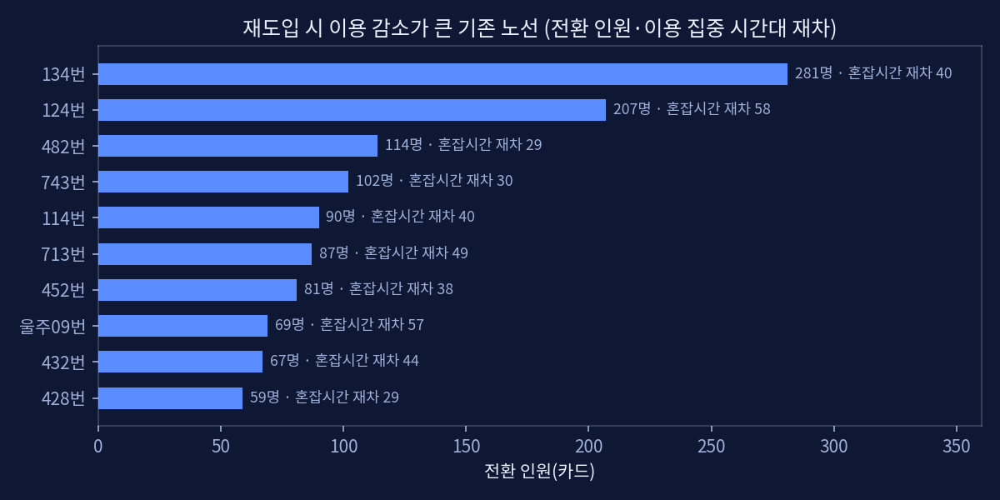
💡 쉽게 말하면: 새 노선에 손님을 내주는 기존 노선들은 원래도 출퇴근에 꽉 차서 터지던 노선입니다. 손님이 좀 빠지는 건 손해가 아니라 붐비던 버스가 한결 여유로워지는 좋은 분산입니다.
그렇다. 위 간선들의 이용이 몰리는 시간대 차내 재차는 49~58명으로 시내버스 정원(45~50)을 넘어선다. 즉 해당 코리더는 현 체계에서 이미 만차에 가깝다. 좌석버스로 대체된 구간은 입석 불가로 그 시간대 수용력이 더 낮아(정원=좌석 40) 무정차 민원으로 이어진다. 단순 수요 재분배가 아니라 절대 공급 부족 구간이 존재하므로 증차를 동반한 재도입은 혼잡 완화에 기여한다.
💡 쉽게 말하면: 그 구간 버스들은 이미 정원을 넘겨 태우고 있어, 손님을 나눠 받을 곳이 없습니다. 그래서 차를 늘려(증차) 길을 하나 더 터주는 재도입이 실제로 도움이 됩니다.
그렇다. 전체 통행 중 현재 환승(trnf≥1)은 4.8%인데, 재도입 노선이 직결로 흡수하는 통행은 17.7%가 현재 환승 통행이다(약 3.6배). 즉 신규 직결 노선은 환승으로 불편을 겪던 통행을 집중적으로 해소해, 환승 횟수·대기시간을 줄이고 이용편의를 높인다. 이는 "개편으로 환승 체계가 강화됐다"는 행정 설명의 이면(환승 부담 증가)을 정량적으로 보여준다.
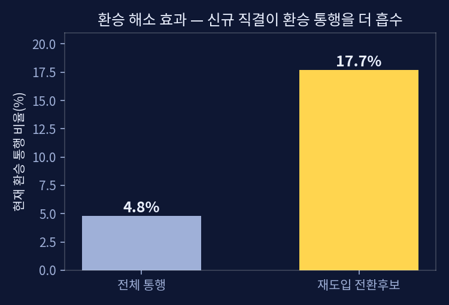
💡 쉽게 말하면: 새 직결 노선이 데려가는 손님 중에는 지금 버스를 갈아타며 불편하게 다니는 사람의 비중이 평소보다 3배 이상 높습니다. 즉 갈아타기 없이 한 번에 갈 수 있게 돼 그만큼 편해진다는 뜻입니다.
효과가 가장 큰 307번을 1순위로 살리고, 123·126번은 출퇴근 시간대 위주로 차차 늘리는 게 예산 대비 효과가 좋습니다. 좌석버스로 대체된 구간(특히 126)은 입석을 못 태워 불편하니 일반버스 재도입이 그 문제를 바로 풉니다.
본 분석은 단일일자(2026-04-07)·교통카드 합성데이터(표본) 기반이다. 절대 인원·만차 편수는 표본이라 낮게 나오므로 노선 간 우선순위·시간대·방향성 패턴 해석에 사용해야 한다. 전환율(50%)·정원·배차·도보반경(300m)은 가정값이며, 유발수요·환승선택모형·통행배정은 미반영이다. 예산·차량(수소버스)·시의회 일정 등 행정 변수는 데이터 범위 밖이다.